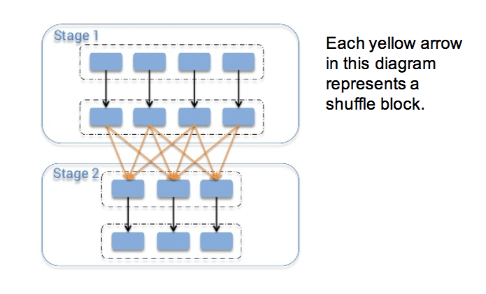
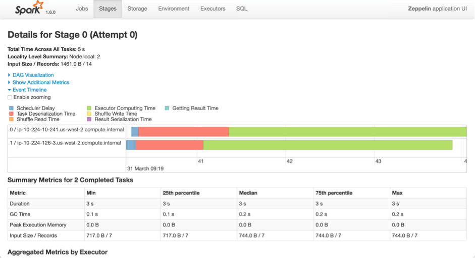
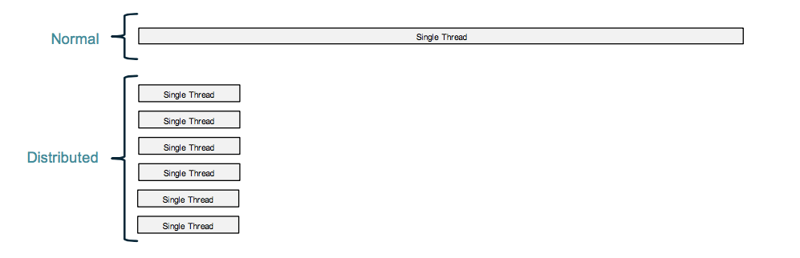
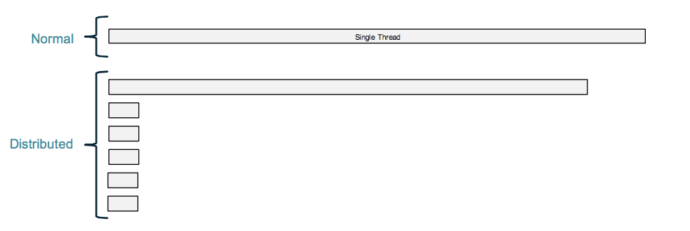
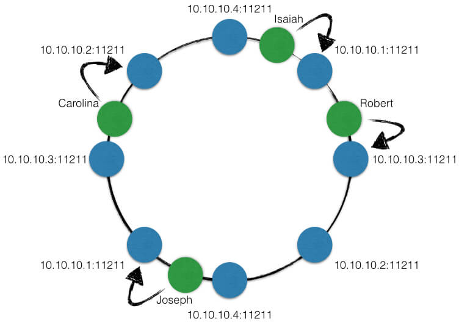
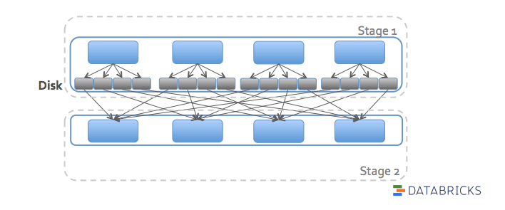
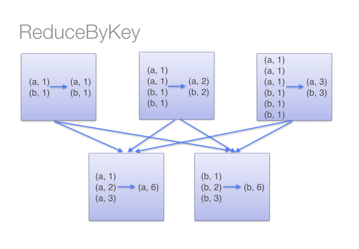
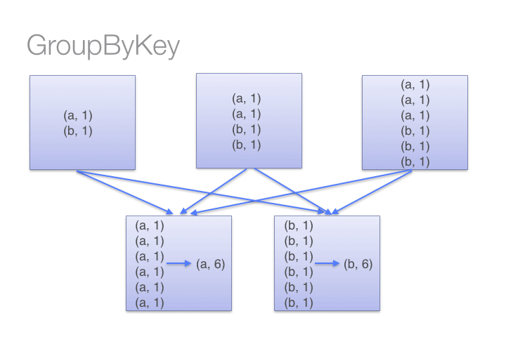
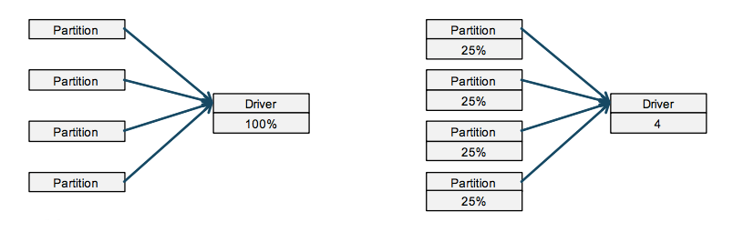

『 Spark 』10. spark 应用程序性能优化｜12 个优化方法
2016-05-03
写在前面
本系列是综合了自己在学习spark过程中的理解记录 ＋ 对参考文章中的一些理解 ＋ 个人实践spark过程中的一些心得而来。写这样一个系列仅仅是为了梳理个人学习spark的笔记记录，所以一切以能够理解为主，没有必要的细节就不会记录了，而且文中有时候会出现英文原版文档，只要不影响理解，都不翻译了。若想深入了解，最好阅读参考文章和官方文档。
其次，本系列是基于目前最新的 spark 1.6.0 系列开始的，spark 目前的更新速度很快，记录一下版本号还是必要的。
最后，如果各位觉得内容有误，欢迎留言备注，所有留言 24 小时内必定回复，非常感谢。
Tips: 如果插图看起来不明显，可以：1. 放大网页；2. 新标签中打开图片，查看原图哦；3. 点击右边目录上方的 present mode 哦。
1. 优化? Why? How? When? What?
“spark 应用程序也需要优化？”，很多人可能会有这个疑问，“不是已经有代码生成器，执行优化器，pipeline 什么的了的吗？”。是的，spark 的确是有一些列强大的内置工具，让你的代码在执行时更快。但是，如果一切都依赖于工具，框架来做的话，我想那只能说明两个问题：1. 你对这个框架仅仅是知其然，而非知其所以然；2. 看来你也只是照葫芦画瓢而已，没了你，别人也可以轻轻松松的写这样一个 spark 应用程序，so you are replaceable;
在做 spark 应用程序的优化的时候，从下面几个点出发就够了：
- 为什么：因为你的资源有限，因为你的应用上生产环境了会有很多不稳定的因素，在上生产前做好优化和测试是唯一一个降低不稳定因素影响的办法；
- 怎么做：web ui ＋ log 是做优化的倚天剑和屠龙刀，能掌握好这两点就可以了；
- 何时做：应用开发成熟时，满足业务要求时，就可以根据需求和时间安排开始做了；
- 做什么：一般来说，spark 应用程序 80% 的优化，都是集中在三个地方：内存，磁盘io，网络io。再细点说，就是 driver，executor 的内存，shuffle 的设置，文件系统的配置，集群的搭建，集群和文件系统的搭建［e.g 尽量让文件系统和集群都在一个局域网内，网络更快；如果可以，可以让 driver 和 集群也在一个局域网内，因为有时候需要从 worker 返回数据到 driver］
- 备注：千万不要一心想着优化都从程序本身入手，虽然大多数时候都是程序自己的原因，但在入手检查程序之前最好先确认所有的 worker 机器情况都正常哦。比如说机器负载，网络情况。
下面这张图来自 databricks 的一个分享 Tuning and Debugging Apache Spark，很有意思，说得非常对啊，哈哈。
OK，下面我们来看看一些常见的优化方法。
2. repartition and coalesce
Spark provides the `repartition()` function, which shuffles the data
across the network to create a new set of partitions. Keep in mind
that repartitioning your data is a fairly expensive operation. Spark
also has an optimized version of `repartition()` called `coalesce()`
that allows avoiding data movement, but only if you are decreasing
the number of RDD partitions. To know whether you can safely call
coalesce(), you can check the size of the RDD using `rdd.partitions.size()`
in Java/Scala and `rdd.getNumPartitions()` in Python and make sure
that you are coalescing it to fewer partitions than it currently has.
总结：当要对 rdd 进行重新分片时，如果目标片区数量小于当前片区数量，那么用 coalesce，不要用 repartition。关于 partition 的更多优化细节，参考 chapter 4 of Learning Spark
3. Passing Functions to Spark
In Python, we have three options for passing functions into Spark.
- lambda expressions
word = rdd.filter(lambda s: "error" in s)- top-level functions
import my_personal_lib
word = rdd.filter(my_personal_lib.containsError)- locally defined functions
def containsError(s):
return "error" in s
word = rdd.filter(containsError)One issue to watch out for when passing functions is inadvertently serializing the object containing the function. When you pass a function that is the member of an object, or contains references to fields in an object (e.g., self.field), Spark sends the entire object to worker nodes, which can be much larger than the bit of information you need. Sometimes this can also cause your program to fail, if your class contains objects that Python can’t figure out how to pickle.
### wrong way
class SearchFunctions(object):
def __init__(self, query):
self.query = query
def isMatch(self, s):
return self.query in s
def getMatchesFunctionReference(self, rdd):
# Problem: references all of "self" in "self.isMatch"
return rdd.filter(self.isMatch)
def getMatchesMemberReference(self, rdd):
# Problem: references all of "self" in "self.query"
return rdd.filter(lambda x: self.query in x)
### the right way
class WordFunctions(object):
...
def getMatchesNoReference(self, rdd):
# Safe: extract only the field we need into a local variable
query = self.query
return rdd.filter(lambda x: query in x)4. worker 的资源分配：cpu, memroy, executors
这个话题比较深，而且在不同的部署模式也不一样 [standalone, yarn, mesos]，这里给不了什么建议。唯一的一个宗旨是，不要一昧考虑把所有资源都独立给到 spark 来用，要考虑到机器本身的一些进程，spark 依赖的一些进程，网络情况，任务情况 [计算密集，IO密集，long-live task]等。
这里只能推荐一些 video，slide 和 blog，具体情况具体分析，以后我遇到资源调优的时候再把实际案例发出来。
5. shuffle block size limitation
No Spark shuffle block can be greater than 2 GB — spark shuffle 里的 block size 不能大于 2g。

Spark 使用一个叫 ByteBuffer 的数据结构来作为 shuffle 数据的缓存，但这个 ByteBuffer 默认分配的内存是 2g，所以一旦 shuffle 的数据超过 2g 的时候，shuflle 过程会出错。影响 shuffle 数据大小的因素有以下常见的几个：
- partition 的数量，partition 越多，分布到每个 partition 上的数据越少，越不容易导致 shuffle 数据过大;
- 数据分布不均匀，一般是 groupByKey 后，存在某几个 key 包含的数据过大，导致该 key 所在的 partition 上数据过大，有可能触发后期 shuflle block 大于 2g;
一般解决这类办法都是增加 partition 的数量，Top 5 Mistakes When Writing Spark Applications 这里说可以预计让每个 partition 上的数据为 128MB 左右，仅供参考，还是需要具体场景具体分析，这里只把原理讲清楚就行了，并没有一个完美的规范。
- sc.textfile 时指定一个比较大的 partition number
- spark.sql.shuffle.partitions
- rdd.repartition
- rdd.coalesce
TIPS:
在 partition 小于 2000 和大于 2000 的两种场景下，Spark 使用不同的数据结构来在 shuffle 时记录相关信息，在 partition 大于 2000 时，会有另一种更高效 [压缩] 的数据结构来存储信息。所以如果你的 partition 没到 2000，但是很接近 2000，可以放心的把 partition 设置为 2000 以上。
def apply(loc: BlockManagerId, uncompressedSizes: Array[Long]): MapStatus = {
if (uncompressedSizes.length > 2000) {
HighlyCompressedMapStatus(loc, uncompressedSizes)
} else {
new CompressedMapStatus(loc, uncompressedSizes)
}
}6. level of parallel － partition
先来看看一个 stage 里所有 task 运行的一些性能指标，其中的一些说明：
Scheduler Delay: spark 分配 task 所花费的时间Executor Computing Time: executor 执行 task 所花费的时间Getting Result Time: 获取 task 执行结果所花费的时间Result Serialization Time: task 执行结果序列化时间Task Deserialization Time: task 反序列化时间Shuffle Write Time: shuffle 写数据时间Shuffle Read Time: shuffle 读数据所花费时间

而这里要说的 level of parallel，其实大多数情况下都是指 partition 的数量，partition 数量的变化会影响上面几个指标的变动。我们调优的时候，很多时候都会看上面的指标变化情况。当 partition 变化的时候，上面几个指标变动情况如下：
- partition 过小［容易引入 data skew 问题］
Scheduler Delay: 无明显变化Executor Computing Time: 不稳定，有大有小，但平均下来比较大Getting Result Time: 不稳定，有大有小，但平均下来比较大Result Serialization Time: 不稳定，有大有小，但平均下来比较大Task Deserialization Time: 不稳定，有大有小，但平均下来比较大Shuffle Write Time: 不稳定，有大有小，但平均下来比较大Shuffle Read Time: 不稳定，有大有小，但平均下来比较大
- partition 过大
Scheduler Delay: 无明显变化Executor Computing Time: 比较稳定，平均下来比较小Getting Result Time: 比较稳定，平均下来比较小Result Serialization Time: 比较稳定，平均下来比较小Task Deserialization Time: 比较稳定，平均下来比较小Shuffle Write Time: 比较稳定，平均下来比较小Shuffle Read Time: 比较稳定，平均下来比较小
那应该怎么设置 partition 的数量呢？这里同样也没有专门的公式和规范，一般都在尝试几次后有一个比较优化的结果。但宗旨是：尽量不要导致 data skew 问题，尽量让每一个 task 执行的时间在一段变化不大的区间之内。
7. data skew
大多数时候，我们希望的分布式计算带来的好处应该是像下图这样的效果：

但是，有时候，却是下面这种效果，这就是所谓的 data skew。即数据没有被 大致均匀 的分布到集群中，这样对一个 task 来说，整个 task 的执行时间取决于第一个数据块被处理的时间。在很多分布式系统中，data skew 都是一个很大的问题，比如说分布式缓存，假设有 10 台缓存机器，但有 50% 的数据都落到其中一台机器上，那么当这台机器 down 掉之后，整个缓存的数据就会丢掉一般，缓存命中率至少 [肯定大于] 降低 50%。这也是很多分布式缓存中要引入一致性哈希，要引入 虚拟节点 vnode 的原因。

一致性哈希原理图：

回到正题，在 spark 中如何解决 data skew 的问题？首先明确这个问题的发生场景和根源：一般来说，都是 (key, value) 型数据中，key 的分布不均匀，这种场景比较常见的方法是把 key 进行 salt 处理 [不知道 salt 中文应该怎么说]，比如说原来有 2 个 key (key1, key2)，并且 key1 对应的数据集很大，而 key2 对应的数据集相对较小，可以把 key 扩张成多个 key (key1-1, key1-2, …, key1-n, key2-1, key2-2, …, key2-m) ，并且保证 key1-* 对应的数据都是原始 key1 对应的数据集上划分而来的，key2-* 上对应的数据都是原始的 key2 对应的数据集上划分而来。这样之后，我们有 m+n 个 key，而且每个 key 对应的数据集都相对较小，并行度增加，每个并行程序处理的数据集大小差别不大，可以大大提速并行处理效率。在这两个个分享里都有提到这种方法：
- Top 5 Mistakes When Writing Spark Applications
- Sparkling: Speculative Partition of Data for Spark Applications - Peilong Li
8. avoid cartesian operation
rdd.cartesian 操作很耗时，特别是当数据集很大的时候，cartesian 的数量级都是平方级增长的，既耗时也耗空间。
>>> rdd = sc.parallelize([1, 2])
>>> sorted(rdd.cartesian(rdd).collect())
[(1, 1), (1, 2), (2, 1), (2, 2)]9. avoid shuffle when possible

spark 中的 shuffle 默认是把上一个 stage 的数据写到 disk 上，然后下一个 stage 再从 disk 上读取数据。这里的磁盘 IO 会对性能造成很大的影响，特别是数据量大的时候。
10. use reduceByKey instead of GroupByKey when possible
 
11. use treeReduce instead of reduce when possible

12. use Kryo serializer
spark 应用程序中，在对 RDD 进行 shuffle 和 cache 时，数据都是需要被序列化才可以存储的，此时除了 IO 外，数据序列化也可能是应用程序的瓶颈。这里推荐使用 kryo 序列库，在数据序列化时能保证较高的序列化效率。
sc_conf = SparkConf()
sc_conf.set("spark.serializer", "org.apache.spark.serializer.KryoSerializer")13. Next
这些都是一些实际实践中的经验和对一些高质量分享的总结［大多数是来自那些高质量分享］，里面可能有说得不完全正确的地方，在未来亲自实践，调试过后会再有一篇性能调试的 blog 的，本篇仅供参考哦。下一次，我们来看看怎么统一部署和配置 spark 的 cluster，那的确几乎来自个人实践经验了。
14. 打开微信，扫一扫，点一点，棒棒的，^_^

参考文章
- chapter 4 of Learning Spark
- chapter 8 of Learning Spark
- Top 5 Mistakes When Writing Spark Applications
- Databricks Spark Knowledge Base
- Sparkling: Speculative Partition of Data for Spark Applications - Peilong Li
- Fighting the skew in Spark
- Tuning and Debugging Apache Spark
- Tuning Spark
- Avoid GroupByKey
本系列文章链接
- 『 Spark 』1. spark 简介
- 『 Spark 』2. spark 基本概念解析
- 『 Spark 』3. spark 编程模式
- 『 Spark 』4. spark 之 RDD
- 『 Spark 』5. 这些年，你不能错过的 spark 学习资源
- 『 Spark 』6. 深入研究 spark 运行原理之 job, stage, task
- 『 Spark 』7. 使用 Spark DataFrame 进行大数据分析
- 『 Spark 』8. 实战案例 ｜ Spark 在金融领域的应用 ｜ 日内走势预测
- 『 Spark 』9. 搭建 IPython + Notebook + Spark 开发环境
- 『 Spark 』10. spark 应用程序性能优化｜12 个优化方法
- 『 Spark 』11. spark 机器学习
- 『 Spark 』12. Spark 2.0 特性介绍
- 『 Spark 』13. Spark 2.0 Release Notes 中文版
- 『 Spark 』14. 一次 Spark SQL 性能优化之旅